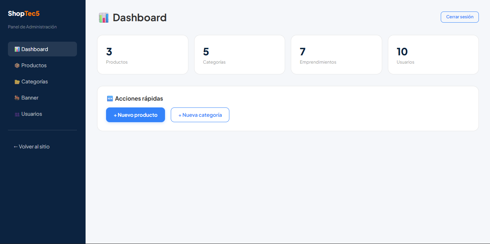
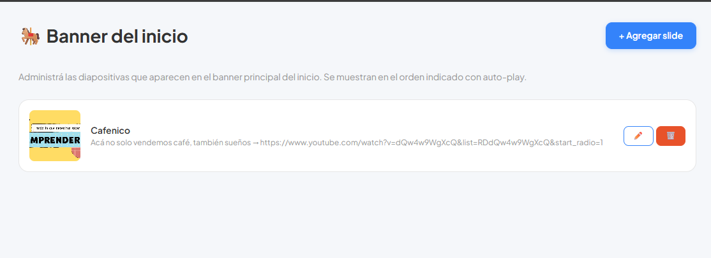
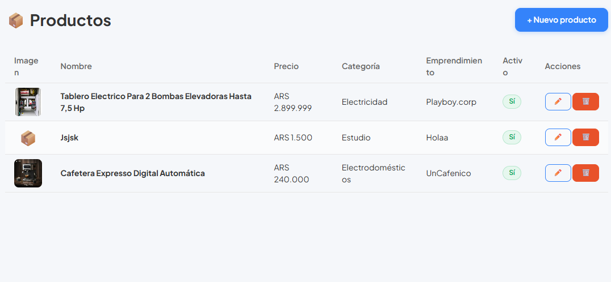
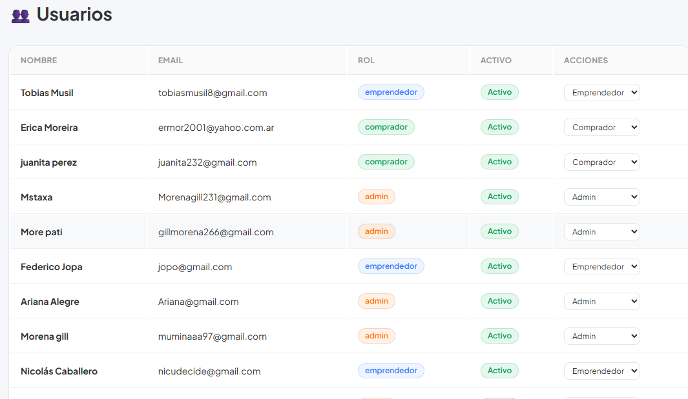
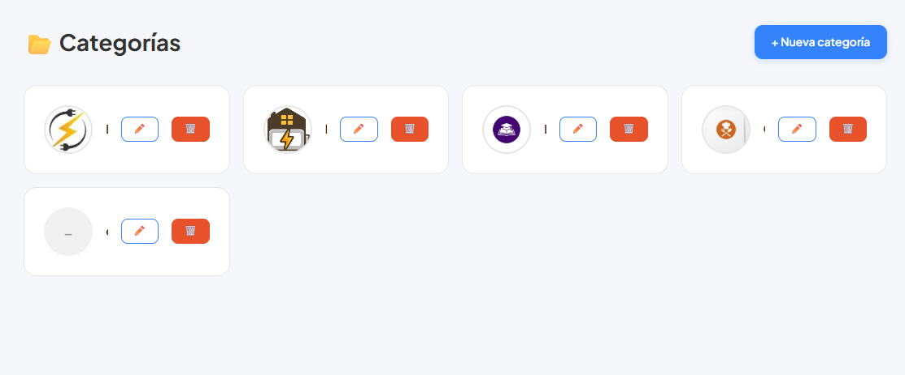

Manual de uso · ShopTec5
EESTN°5 Berazategui · Plataforma de compraventa escolar
Esta guía explica paso a paso cómo usar el sistema según tu rol.
ShopTec5 es una plataforma web de compraventa pensada para la comunidad de la EESTN°5 de Berazategui. Permite a alumnos, docentes, auxiliares y preceptores publicar productos, explorar el catálogo y realizar compras de forma simple y segura desde cualquier dispositivo con conexión a Internet.
Para usar ShopTec5 necesitás una cuenta. El registro es gratuito y tarda menos de un minuto. Al registrarte, tu cuenta queda con el rol Comprador por defecto.
Si ya tenés una cuenta, podés ingresar con tu email y contraseña desde cualquier dispositivo.
ShopTec5 tiene dos barras principales para navegar: el header arriba del todo y la barra de navegación justo debajo.

Página de inicio — header con buscador y carrito, navbar con categorías y opciones
| Elemento | Para qué sirve |
|---|---|
| 🛒 ShopTec5 (logo) | Volvés a la página de inicio desde cualquier lugar |
| Buscador | Buscás productos por nombre en todo el catálogo |
| Creá tu cuenta | Abre el formulario de registro (solo si no estás logueado) |
| Ingresá | Abre la pantalla de login (solo si no estás logueado) |
| 🛒 (ícono carrito) | Abre tu carrito de compras con el contador de productos |
| Tu nombre / avatar | Despliega el menú de tu cuenta (perfil, pedidos, cerrar sesión) |
| Opción | Para qué sirve |
|---|---|
| Categorías ▾ | Despliega el menú con todas las categorías disponibles |
| Ofertas | Productos con descuento |
| 🏷️ Vender | Abre el formulario para publicar un producto (solo Emprendedores) |
| Ayuda | Acceso al manual y soporte |

Menú desplegable de categorías — hacé clic en Categorías ▾ para verlo
Hacé clic en Categorías ▾ para ver todas las categorías disponibles: Tecnología, Moda, Hogar, Electrodomésticos, Vehículos, Deportes, Mascotas, y más. Hacé clic en cualquiera para filtrar el catálogo por ese tipo de producto.
El catálogo muestra todos los productos publicados por los emprendedores de la comunidad. Podés buscarlos por nombre o filtrarlos por categoría.

Catálogo de productos — grilla con imagen, nombre, precio y vendedor de cada publicación
| Elemento | Qué es |
|---|---|
| Foto | Imagen principal del producto subida por el vendedor |
| Nombre | Título de la publicación |
| Precio | Precio en pesos definido por el vendedor |
| Vendedor | Nombre del emprendedor que publicó el producto |
Al hacer clic en cualquier producto del catálogo podés ver toda su información antes de decidir comprarlo.

Página de detalle — fotos, descripción, precio y botón para agregar al carrito
| Sección | Qué muestra |
|---|---|
| Fotos | Imágenes del producto subidas por el vendedor |
| Nombre y precio | Título y precio del producto |
| Descripción | Estado, características, accesorios incluidos y cualquier detalle relevante |
| Vendedor | Nombre del emprendedor que publicó el producto |
| Agregar al carrito | Botón para sumar el producto a tu carrito de compras |
El carrito te permite reunir los productos que querés comprar y revisar el total antes de confirmar la compra.
Desde la sección de pedidos podés ver el historial de todas tus compras realizadas y el estado de cada una.

Historial de pedidos — lista de compras con estado y detalle de cada una
| Estado | Qué significa |
|---|---|
| Pendiente | La compra fue confirmada y está esperando ser procesada por el vendedor |
| Entregado | El producto fue entregado correctamente |
| Anulado | El pedido fue cancelado |
Desde tu perfil podés ver y editar tus datos personales y gestionar tu cuenta.

Pantalla de perfil — datos personales y opciones de cuenta
Hacé clic en tu nombre en la barra superior y seleccioná Cerrar sesión. El sistema te desconecta y te redirige a la página de inicio. Importante si usás una computadora compartida.
Si tenés el rol Emprendedor, podés publicar productos para que toda la comunidad los vea. El botón 🏷️ Vender aparece en la barra de navegación una vez que tenés ese rol activo.
| Campo | Recomendación |
|---|---|
| Nombre | Ej: "Auriculares Bluetooth JBL Tune 510BT" — marca + modelo + característica |
| Precio | Investigá precios similares para ser competitivo dentro de la comunidad |
| Descripción | Mencioná el estado (nuevo/usado), qué incluye y cualquier detalle importante |
| Fotos | Usá fotos reales con buena iluminación. Más fotos generan más confianza en el comprador |
Desde Mis productos podés ver todas tus publicaciones activas y editarlas o eliminarlas cuando quieras.

Panel de mis productos — lista de tus publicaciones con opciones de editar y eliminar
El dashboard es la pantalla principal del panel de administración. Muestra un resumen general del estado de la plataforma en tiempo real.

Dashboard — contadores en tiempo real y accesos rápidos a las secciones de gestión
| Contador | Qué indica |
|---|---|
| 📦 Productos | Total de productos publicados en la plataforma |
| 🗂️ Categorías | Total de categorías activas en el sistema |
| 🏷️ Emprendimientos | Cantidad de usuarios con rol Emprendedor |
| 👥 Usuarios | Total de usuarios registrados en ShopTec5 |
Desde este panel podés ver, agregar, editar y eliminar cualquier producto publicado en la plataforma, sin importar quién lo publicó.

Panel de productos — lista completa con imagen, nombre, precio, categoría y estado activo
| Acción | Cómo hacerlo |
|---|---|
| Ver todos los productos | La lista muestra imagen, nombre, precio, categoría, emprendimiento y estado |
| Agregar producto nuevo | Hacé clic en + Nuevo producto y completá el formulario |
| Editar un producto | Hacé clic en el botón ✏️ de la fila del producto |
| Eliminar un producto | Hacé clic en el botón 🗑️ de la fila y confirmá la acción |
Las categorías organizan los productos del catálogo. Desde acá podés crear, editar y eliminar las categorías que aparecen en el menú del sitio.

Panel de categorías — lista con ícono y nombre de cada categoría disponible
El banner es el slider que aparece en la página de inicio. Podés administrar los slides que ven todos los usuarios al entrar al sitio.

Panel de banner — slides activos con imagen y descripción de cada uno
Cada slide tiene botones ✏️ para editar y 🗑️ para eliminar. Los cambios se reflejan en tiempo real en la página de inicio para todos los usuarios.
Desde este panel podés ver todos los usuarios registrados en ShopTec5 y modificar sus roles dentro del sistema.

Panel de usuarios — lista con nombre, email, rol y estado de cada usuario registrado
ShopTec5 tiene tres roles de usuario. Cada rol define qué puede hacer cada persona dentro de la plataforma.
| Rol | Quién lo tiene | Qué puede hacer |
|---|---|---|
| Comprador | Todos los usuarios al registrarse | Explorar catálogo, buscar productos, agregar al carrito, comprar, ver pedidos, editar perfil |
| Emprendedor | Usuarios que quieren vender (asignado por Admin) | Todo lo del Comprador + publicar productos, editar y eliminar sus propias publicaciones |
| Admin | Equipo de ShopTec5 | Acceso total: gestión de productos, categorías, banner y usuarios de toda la plataforma |
Respuestas a las dudas más comunes al usar ShopTec5.
Verificá que el email esté bien escrito (sin espacios al inicio ni al final) y que la contraseña sea correcta. Revisá que el Bloq Mayús no esté activado. Si el problema continúa, usá ¿Olvidaste tu contraseña? en la pantalla de login para recibir un email de recuperación.
El botón 🏷️ Vender solo aparece si tenés el rol Emprendedor activo. Contactá a un administrador de ShopTec5 para que te asigne ese rol desde el panel de usuarios.
Los productos se publican en tiempo real. Si no aparece, recargá la página con F5. Si el problema persiste, verificá que el producto esté marcado como activo en tu lista de productos.
El cambio de rol de usuarios se guarda automáticamente al seleccionarlo. Para el resto de las acciones (agregar/editar productos, categorías, banner) siempre hay que hacer clic en el botón Guardar.